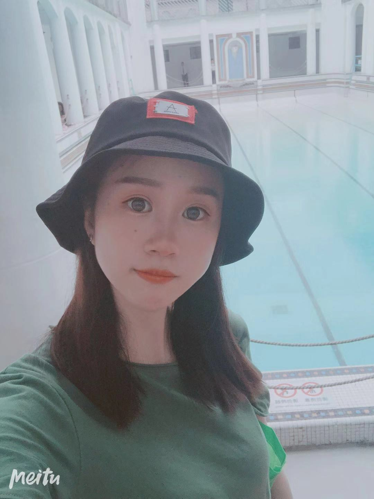

Cold♥Love 大宝看这里！ 七个多月过去啦，我又来啦还记得这个吗，这是我们在金科路等车的时候我拍的，冷冽的寒风呼呼地吹瞬间我就想抱着你给你温暖，想一辈子这样抱你在怀中陈怡儿！你愿意吗，嘿先这样，后面再来看你噢mua~♥
Selfie 陈怡儿又臭美啦 三年了，我们在一起三年了。这三年里我们爱过、吵过、哭过、笑过，我们经历了所有情侣都会经历的过程，但我仍然觉得我们的爱情是独一无二的，再也没有一个男人像我一样出现在你的面前，也再也没有一个女人像你一样出现在我面前。
Selfie 社会我怡姐，人狠话不多 长久以来，我一直被陈怡儿冠以“直男”称号，庆幸的是你也只是偶尔的抱怨，我相信你也只是偶尔的吐下槽罢了。很庆幸能够在四年前认识你，在三年前能够在一起并且走到现在。我们过着当下，也时常憧憬着未来，有时也会很累，但是想想能和你有一个看得见的未来就兴奋不已！
Selfie 大头娃娃嗷 我觉得这三年跟着我让怡儿受委屈了。还记得松江的那段时光吗？落魄的日子咱俩也走出来了，如今虽然没有大富大贵，但也比曾经要好了很多不是吗？希望以后能和怡儿每年都有单独的旅行，去看一看这个世界。2020，我想和怡儿看看这个世界。
Selfie 啥啥啥顶  这个是和你在摩天轮上的合照。是不是想起了我们的点点滴滴？我喜欢陈怡儿傻傻的笑，喜欢陈怡儿生气时的嘟嘟嘴(说喜欢你可别天天嘟嗷^_^)，当然还有很多很多这里都放不下了，所以我打算以后专门弄一个我们的照片集，存放我们的照片和它们背后的故事。